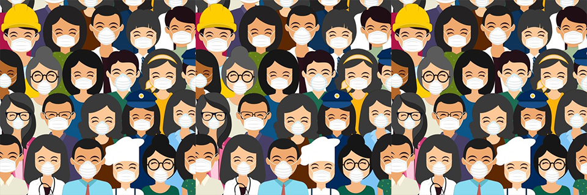

Covid19 Era
The emergence of the novel coronavirus, SARS-CoV-2, and the subsequent COVID-19 pandemic have had an unprecedented impact on the world. Originating in late 2019, this highly contagious virus quickly spread across continents, affecting millions of lives and challenging every aspect of our existence. In this essay, we will explore the multifaceted effects of COVID-19 and the valuable lessons it has taught us..
COVID-19 has turned our lives upside down, causing disruptions in societies, economies, and healthcare systems across the globe. Hospitals have been overwhelmed, medical supplies have run short, and tragically, many lives have been lost. Lockdowns and social distancing measures have taken a toll on economies, leading to job losses and financial struggles for countless individuals and businesses. Schools have closed, students have faced educational setbacks, and travel restrictions have upended our plans. This pandemic has truly exposed the vulnerabilities of our interconnected world.
| Prevention Measures | Description |
|---|---|
| Wear a mask | Wear a mask to cover your nose and mouth in public settings. |
| Maintain social distancing | Stay at least 6 feet away from others who are not from your household. |
| Wash hands frequently | Wash your hands with soap and water for at least 20 seconds, especially after being in public places. |
| Avoid touching face | Avoid touching your eyes, nose, and mouth with unwashed hands. |
| Cover coughs and sneezes | Cover your mouth and nose with a tissue or your elbow when coughing or sneezing. |
| Clean and disinfect | Clean and disinfect frequently touched objects and surfaces daily. |